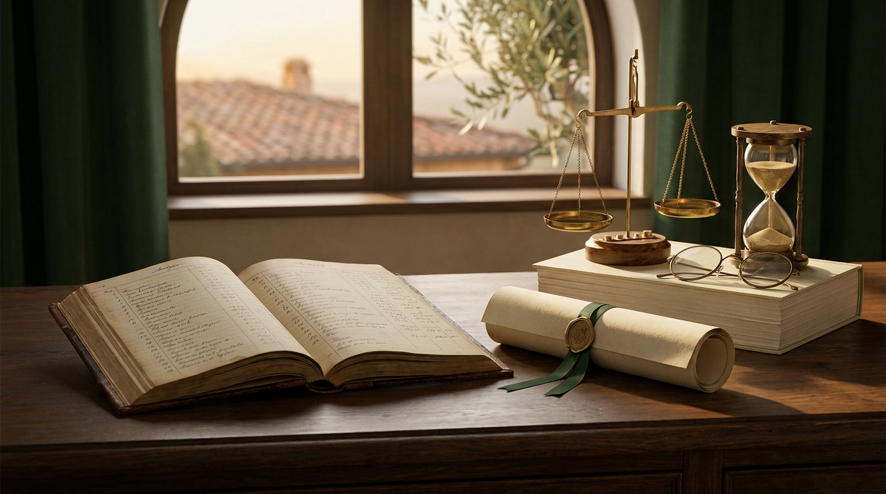

Leasing e piano di ammortamento: la determinatezza delle condizioni economiche
La Cassazione torna sul leasing finanziario: l'assenza del piano di ammortamento nel contratto incide sulla determinatezza delle condizioni economiche. Quando il calcolo della quota capitale e interessi non è verificabile, scattano i vincoli degli artt. 117 t.u.b. e 1346 c.c. Una pronuncia che riguarda imprese e professionisti che hanno sottoscritto contratti di locazione finanziaria con clausole opache.

Il caso
Nella locazione finanziaria (leasing) la società finanziatrice acquista un bene e lo concede in godimento all'utilizzatore dietro pagamento di canoni periodici, con facoltà di riscatto finale. Il canone non è una semplice cifra: racchiude una quota capitale, una quota interessi e i costi accessori.
La Cassazione ha affrontato l'ipotesi in cui il contratto indichi l'importo dei canoni ma ometta il piano di ammortamento, ossia il prospetto che scompone ogni rata e mostra come matura il debito nel tempo. Senza quel documento, l'utilizzatore conosce quanto paga, ma non come e perché si forma quella somma.
Il punto giuridico è chiaro: la mancata allegazione del piano incide sulla determinatezza delle condizioni economiche del contratto.
Inquadramento normativo
Due le norme richiamate.
L'art. 117 t.u.b. (Testo Unico Bancario) impone la forma scritta per i contratti bancari e finanziari e richiede che siano indicati con precisione il tasso d'interesse e ogni altro prezzo o condizione applicato. La ratio è la trasparenza: il cliente deve poter conoscere e verificare il costo effettivo del finanziamento.
L'art. 1346 c.c. stabilisce che l'oggetto del contratto deve essere determinato o almeno determinabile. Non basta indicare una cifra finale: occorre che i criteri di calcolo siano tali da consentire la ricostruzione del dato economico senza margini di arbitrio.
Il collegamento tra le due disposizioni è il fulcro della pronuncia. Se il piano di ammortamento manca e i parametri di calcolo non sono ricavabili dal testo, la pattuizione economica rischia di non essere determinabile. La conseguenza non è teorica: può tradursi nell'applicazione dei tassi sostitutivi previsti dall'art. 117, comma 7, t.u.b. (i tassi minimi dei buoni del tesoro), molto più favorevoli al cliente rispetto a quelli contrattuali.
Implicazioni pratiche
Per le imprese e i professionisti che utilizzano il leasing, la portata è concreta.
Il piano di ammortamento non è un allegato formale: è lo strumento che rende verificabile il costo del denaro. La sua assenza, o la presenza di un prospetto che non consente di ricostruire il regime di capitalizzazione e l'imputazione delle quote, espone il contratto a contestazioni sulla determinatezza delle condizioni.
Questo significa che un utilizzatore potrebbe ottenere il ricalcolo del rapporto a condizioni diverse da quelle pattuite, con possibile riduzione del peso degli interessi.
Attenzione, però. La pronuncia non afferma che ogni leasing privo di piano allegato sia automaticamente viziato. Conta la concreta determinabilità: se i parametri (tasso, periodicità, criterio di calcolo) sono presenti e permettono la ricostruzione, il difetto formale può non essere decisivo. L'analisi è caso per caso e richiede una verifica documentale puntuale.
Per le società di leasing, il messaggio è opposto ma speculare: la documentazione contrattuale va costruita in modo da rendere sempre ricostruibile il dato economico.
Cosa fare in concreto
- Recuperate il contratto integrale e tutti gli allegati, verificando se il piano di ammortamento è effettivamente presente e sottoscritto.
- Controllate la coerenza dei dati: tasso indicato, periodicità dei canoni, importo del riscatto e criterio di calcolo devono permettere di ricostruire il debito senza ricorrere a elementi esterni.
- Fate verificare il conteggio da un consulente tecnico (commercialista o perito) per accertare se le condizioni economiche sono determinabili o se emergono divergenze rilevanti.
- Valutate i termini prima di agire: contestazioni e ripetizioni di indebito sono soggette a regole di prescrizione che variano secondo la natura del rapporto.
- Non interrompete i pagamenti sulla base di una valutazione sommaria: la sospensione unilaterale dei canoni può esporre a iniziative di risoluzione e segnalazione.
La materia è tecnica e l'esito dipende dal contenuto specifico di ciascun contratto. Una verifica preliminare consente di capire se vi sono margini di tutela e con quali rischi.
Disclaimer
Contributo informativo a cura di Tamburro & Partners - Avv. Giuseppe Tamburro. Non costituisce parere legale.
Ogni contratto ha il suo equilibrio.
Se vuoi una revisione delle clausole o una redazione su misura, scrivi allo studio. Ti rispondiamo entro un giorno lavorativo.